Change analysis for Botswana for PRIMAP-hist v2.8_final compared to
v2.7_final
This changelog is published under the creative commons non-commercial
share alike license. For more information see creativecommons.org.
Overview over
emissions by sector and gas
The following figures show the aggregate national total emissions
excluding LULUCF AR6GWP100 for the country reported priority scenario.
The dotted lines show the v2.7_final data.
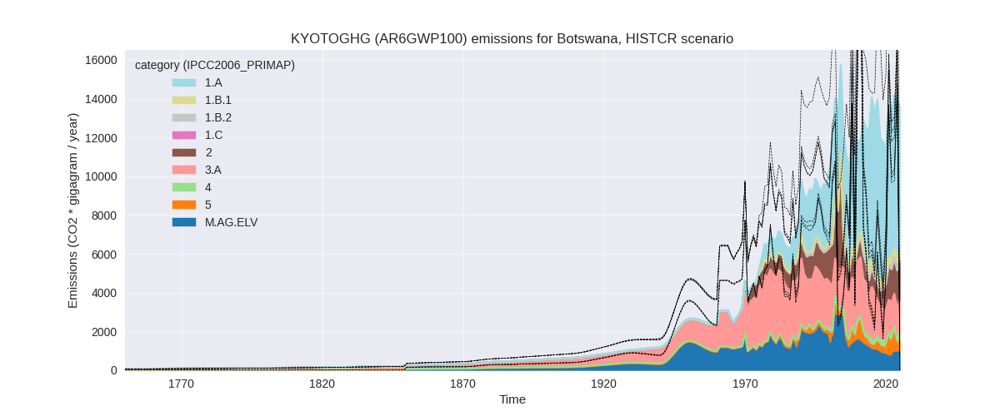
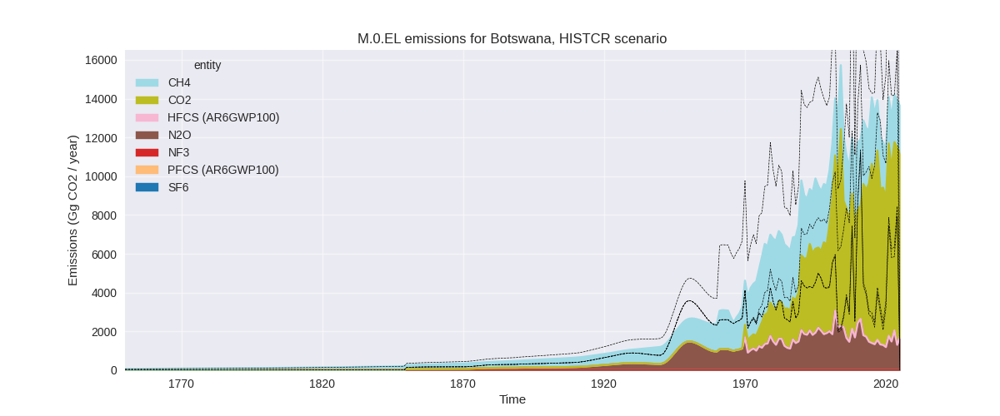
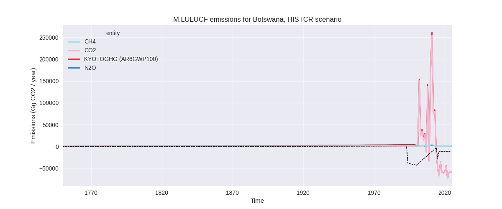
The following figures show the aggregate national total emissions
excluding LULUCF AR6GWP100 for the third party priority scenario. The
dotted lines show the v2.7_final data.
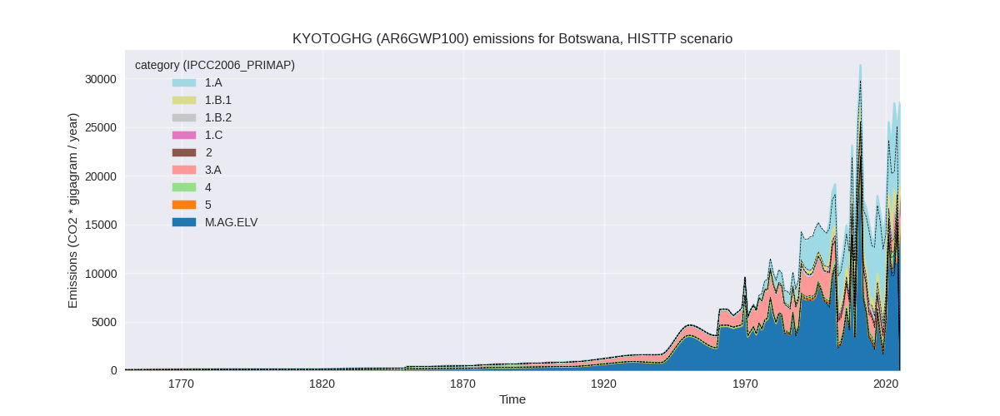
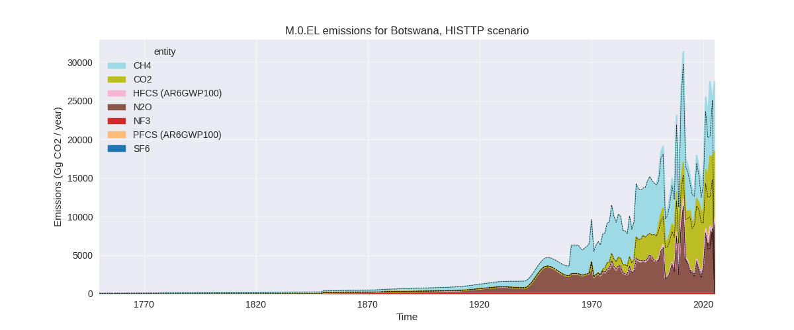
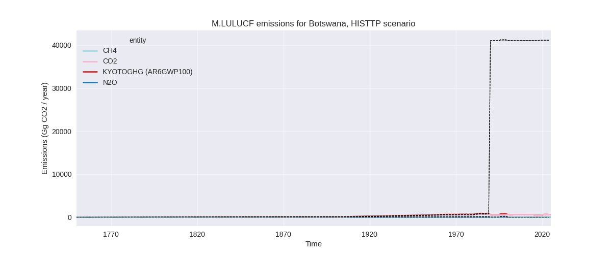
Used country reported data
The changelog with this information is available upon request for
non-commercial customers. Paying commercial customers will be provided
with the information.
Overview over changes
In the country reported priority scenario we have the following
changes for aggregate Kyoto GHG and national total emissions excluding
LULUCF (M.0.EL):
- Emissions in 2024 have changed by -46.9%% (-12312.70 Gg CO2 / year)
- Emissions in 1990-2024 have changed by -28.3%% (-4599.02 Gg CO2 / year)
In the third party priority scenario we have the following changes
for aggregate Kyoto GHG and national total emissions excluding LULUCF
(M.0.EL):
- Emissions in 2024 have changed by -1.8%% (-456.33 Gg CO2 / year)
- Emissions in 1990-2024 have changed by 5.4%% (854.29 Gg CO2 / year)
Most
important changes per scenario and time frame
In the country reported priority scenario the
following sector-gas combinations have the highest absolute impact on
national total KyotoGHG (AR6GWP100) emissions in 2024
(up to 10 with either at least 0.2% impact on total emissions or at
least 20% change):
- 1: M.AG.ELV, CH4 with -7223.72 Gg CO2 / year (-100.0%, -27.5%)
- 2: M.AG.ELV, N2O with -6051.18 Gg CO2 / year (-87.1%, -23.1%)
- 3: 2, CO2 with 1877.15 Gg CO2 / year (8528.7%, 7.2%)
- 4: 1.A, N2O with -506.53 Gg CO2 / year (-90.8%, -1.9%)
- 5: 2, HFCS (AR6GWP100) with -488.50 Gg CO2 / year (-94.0%, -1.9%)
- 6: 1.A, CO2 with 298.99 Gg CO2 / year (3.8%, 1.1%)
- 7: 1.A, CH4 with -148.87 Gg CO2 / year (-84.7%, -0.6%)
- 8: 4, CH4 with 135.70 Gg CO2 / year (71.8%, 0.5%)
- 9: 1.B.1, CH4 with -116.28 Gg CO2 / year (-21.6%, -0.4%)
- 10: 5, N2O with -87.41 Gg CO2 / year (-24.1%, -0.3%)
In the country reported priority scenario the
following sector-gas combinations have the highest absolute impact on
national total KyotoGHG (AR6GWP100) emissions in
1990-2024 (up to 10 with either at least 0.1% impact on
total emissions or at least 10% change):
- 1: M.AG.ELV, CH4 with -3174.94 Gg CO2 / year (-95.7%, -19.5%)
- 2: M.AG.ELV, N2O with -2690.95 Gg CO2 / year (-66.0%, -16.6%)
- 3: 2, CO2 with 1476.83 Gg CO2 / year (4987.2%, 9.1%)
- 4: 5, N2O with 193.55 Gg CO2 / year (104.9%, 1.2%)
- 5: 1.A, N2O with -183.31 Gg CO2 / year (-82.7%, -1.1%)
- 6: 1.A, CH4 with -167.34 Gg CO2 / year (-89.2%, -1.0%)
- 7: 2, HFCS (AR6GWP100) with -156.77 Gg CO2 / year (-93.1%, -1.0%)
- 8: 1.A, CO2 with 115.39 Gg CO2 / year (2.2%, 0.7%)
- 9: 1.B.1, CH4 with -82.72 Gg CO2 / year (-24.1%, -0.5%)
- 10: 4, CH4 with 67.06 Gg CO2 / year (40.3%, 0.4%)
In the third party priority scenario the following
sector-gas combinations have the highest absolute impact on national
total KyotoGHG (AR6GWP100) emissions in 2024 (up to 10
with either at least 0.2% impact on total emissions or at least 20%
change):
- 1: M.AG.ELV, CH4 with -3120.02 Gg CO2 / year (-43.2%, -12.4%)
- 2: 1.A, CO2 with 2258.21 Gg CO2 / year (35.9%, 9.0%)
- 3: 2, CO2 with 961.42 Gg CO2 / year (4368.2%, 3.8%)
- 4: M.AG.ELV, N2O with -271.81 Gg CO2 / year (-3.9%, -1.1%)
- 5: 1.B.1, CH4 with -256.59 Gg CO2 / year (-20.4%, -1.0%)
- 6: 5, N2O with -87.41 Gg CO2 / year (-24.1%, -0.3%)
- 7: 1.A, CH4 with 81.02 Gg CO2 / year (46.1%, 0.3%)
- 8: 4, CH4 with 54.72 Gg CO2 / year (11.8%, 0.2%)
- 9: 3.A, CH4 with -51.99 Gg CO2 / year (-4.4%, -0.2%)
In the third party priority scenario the following
sector-gas combinations have the highest absolute impact on national
total KyotoGHG (AR6GWP100) emissions in 1990-2024 (up
to 10 with either at least 0.1% impact on total emissions or at least
10% change):
- 1: 2, CO2 with 493.67 Gg CO2 / year (1667.1%, 3.1%)
- 2: 1.A, CO2 with 236.89 Gg CO2 / year (5.2%, 1.5%)
- 3: 5, N2O with 193.55 Gg CO2 / year (104.9%, 1.2%)
- 4: 3.A, CH4 with -100.65 Gg CO2 / year (-4.6%, -0.6%)
- 5: M.AG.ELV, CH4 with -47.56 Gg CO2 / year (-1.4%, -0.3%)
- 6: 1.B.1, CH4 with 44.54 Gg CO2 / year (6.9%, 0.3%)
- 7: 1.A, CH4 with 25.87 Gg CO2 / year (13.8%, 0.2%)
- 8: 4, CO2 with 2.51 Gg CO2 / year (inf%, 0.0%)
Notes on data changes
The changelog with this information is available upon request for
non-commercial customers. Paying commercial customers will be provided
with the information.
Changes by sector and gas
For each scenario and time frame the changes are displayed for all
individual sectors and all individual gases. In the sector plot we use
aggregate Kyoto GHGs in AR6GWP100. In the gas plot we usenational total
emissions without LULUCF.
country reported scenario
2024
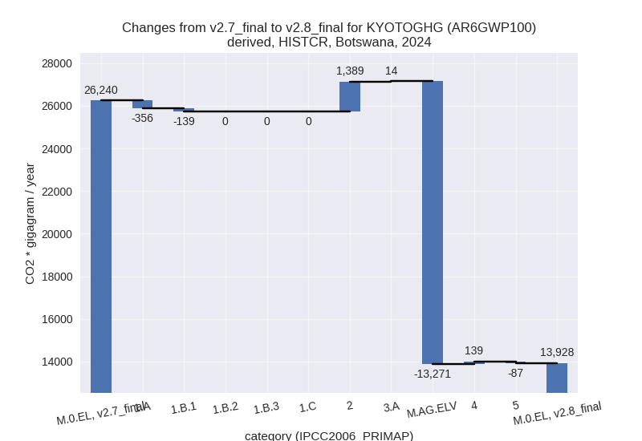
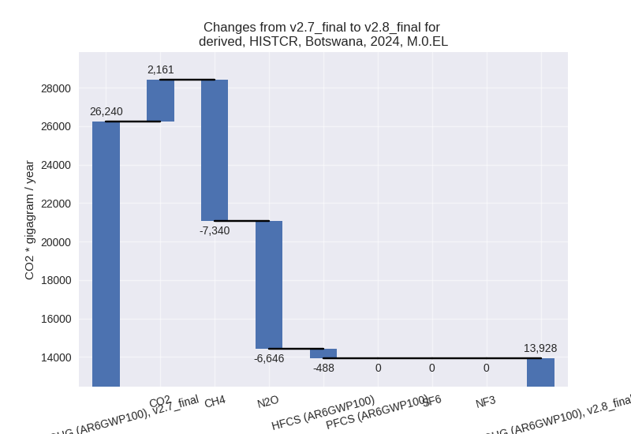
1990-2024
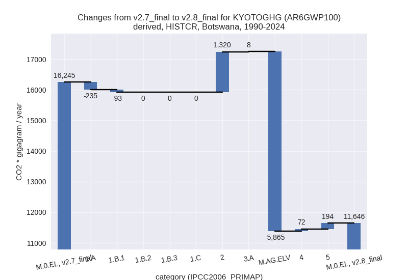
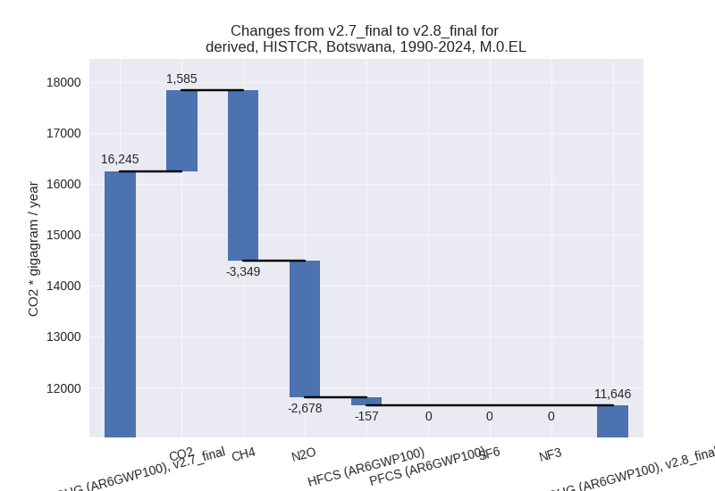
third party scenario
2024
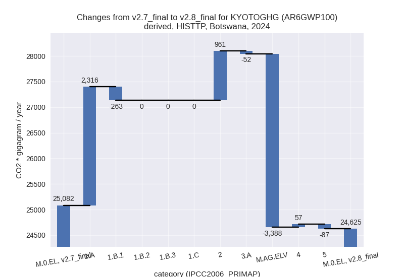
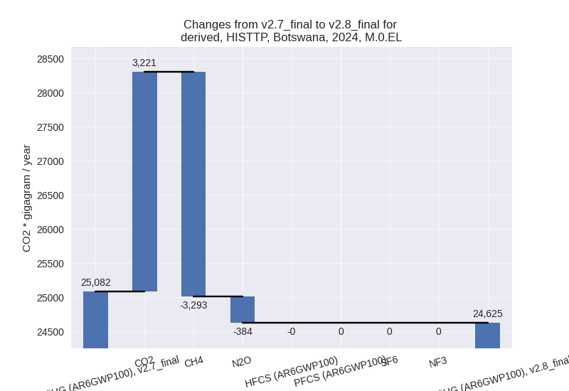
1990-2024
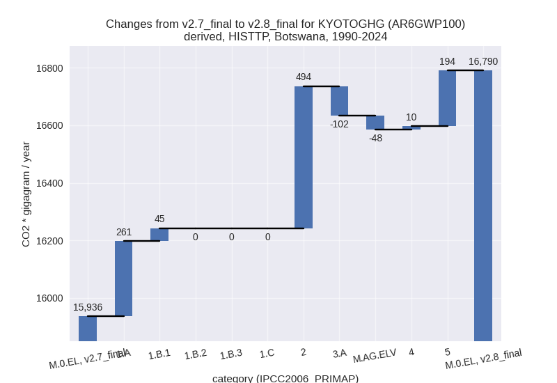
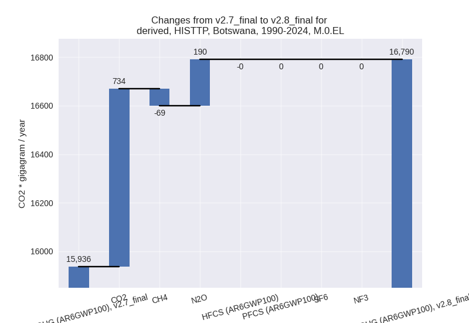
Detailed changes for the
scenarios:
country reported scenario
(HISTCR):
Most important changes
per time frame
For 2024 the following sector-gas combinations have
the highest absolute impact on national total KyotoGHG (AR6GWP100)
emissions in 2024 (up to 20 with either at least 0.2%
impact on total emissions or at least 20% change):
- 1: M.AG.ELV, CH4 with -7223.72 Gg CO2 / year (-100.0%), -27.5%)
- 2: M.AG.ELV, N2O with -6051.18 Gg CO2 / year (-87.1%), -23.1%)
- 3: 2, CO2 with 1877.15 Gg CO2 / year (8528.7%), 7.2%)
- 4: 1.A, N2O with -506.53 Gg CO2 / year (-90.8%), -1.9%)
- 5: 2, HFCS (AR6GWP100) with -488.50 Gg CO2 / year (-94.0%), -1.9%)
- 6: 1.A, CO2 with 298.99 Gg CO2 / year (3.8%), 1.1%)
- 7: 1.A, CH4 with -148.87 Gg CO2 / year (-84.7%), -0.6%)
- 8: 4, CH4 with 135.70 Gg CO2 / year (71.8%), 0.5%)
- 9: 1.B.1, CH4 with -116.28 Gg CO2 / year (-21.6%), -0.4%)
- 10: 5, N2O with -87.41 Gg CO2 / year (-24.1%), -0.3%)
- 11: 1.B.1, CO2 with -23.33 Gg CO2 / year (-94.1%), -0.1%)
- 12: 4, CO2 with 4.85 Gg CO2 / year (inf%), 0.0%)
- 13: M.AG.ELV, CO2 with 3.58 Gg CO2 / year (inf%), 0.0%)
- 14: 1.B.1, N2O with 0.88 Gg CO2 / year (49.8%), 0.0%)
For 1990-2024 the following sector-gas combinations
have the highest absolute impact on national total KyotoGHG (AR6GWP100)
emissions in 1990-2024 (up to 20 with either at least
0.1% impact on total emissions or at least 10% change):
- 1: M.AG.ELV, CH4 with -3174.94 Gg CO2 / year (-95.7%), -19.5%)
- 2: M.AG.ELV, N2O with -2690.95 Gg CO2 / year (-66.0%), -16.6%)
- 3: 2, CO2 with 1476.83 Gg CO2 / year (4987.2%), 9.1%)
- 4: 5, N2O with 193.55 Gg CO2 / year (104.9%), 1.2%)
- 5: 1.A, N2O with -183.31 Gg CO2 / year (-82.7%), -1.1%)
- 6: 1.A, CH4 with -167.34 Gg CO2 / year (-89.2%), -1.0%)
- 7: 2, HFCS (AR6GWP100) with -156.77 Gg CO2 / year (-93.1%), -1.0%)
- 8: 1.A, CO2 with 115.39 Gg CO2 / year (2.2%), 0.7%)
- 9: 1.B.1, CH4 with -82.72 Gg CO2 / year (-24.1%), -0.5%)
- 10: 4, CH4 with 67.06 Gg CO2 / year (40.3%), 0.4%)
- 11: 1.B.1, CO2 with -10.88 Gg CO2 / year (-92.0%), -0.1%)
- 12: 4, N2O with 2.77 Gg CO2 / year (12.0%), 0.0%)
- 13: 4, CO2 with 2.51 Gg CO2 / year (inf%), 0.0%)
- 14: M.AG.ELV, CO2 with 0.90 Gg CO2 / year (inf%), 0.0%)
- 15: 1.B.1, N2O with 0.83 Gg CO2 / year (58.8%), 0.0%)
Changes in the main sectors for aggregate KyotoGHG (AR6GWP100)
are
- 1: Total sectoral emissions in 2022 are 7806.58 Gg
CO2 / year which is 60.0% of M.0.EL emissions. 2024 Emissions have
changed by -5.3% (-495.13 Gg CO2 /
year). 1990-2024 Emissions have changed by -5.5% (-328.02 Gg CO2 / year). For 2024
the changes per gas
are:
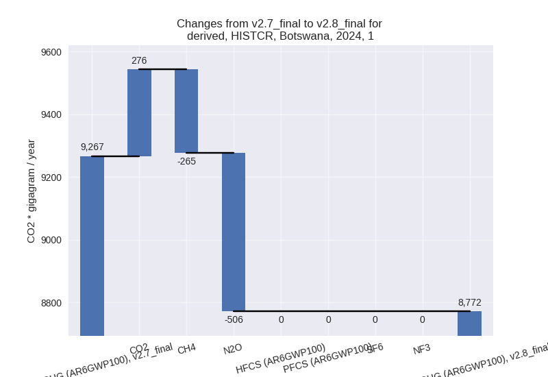
For 1990-2024 the changes per gas
are:
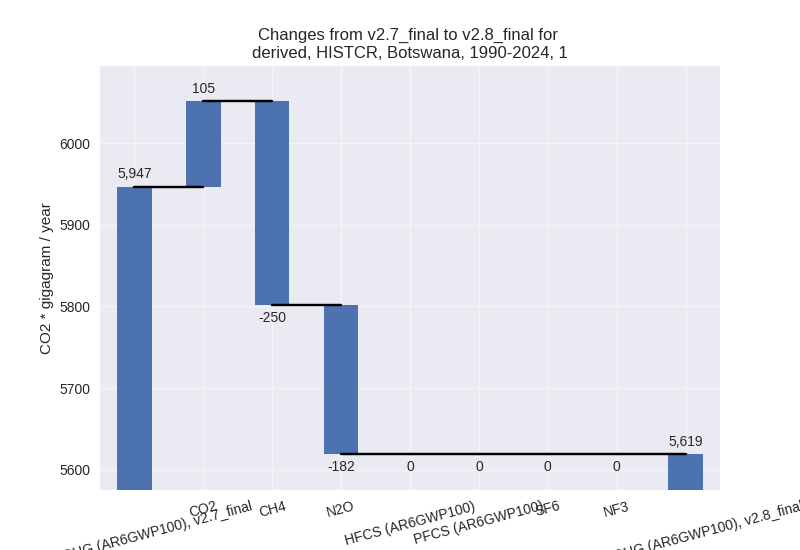
The changes come from the following subsectors:
- 1.A: Total sectoral emissions in 2022 are 7300.70
Gg CO2 / year which is 93.5% of category 1 emissions. 2024 Emissions
have changed by -4.1% (-356.41 Gg
CO2 / year). 1990-2024 Emissions have changed by -4.2% (-235.26 Gg CO2 / year). For 2024
the changes per gas
are:
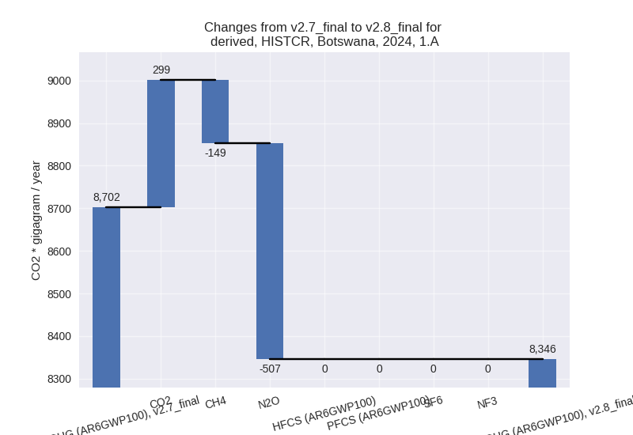
For 1990-2024 the changes per gas
are:
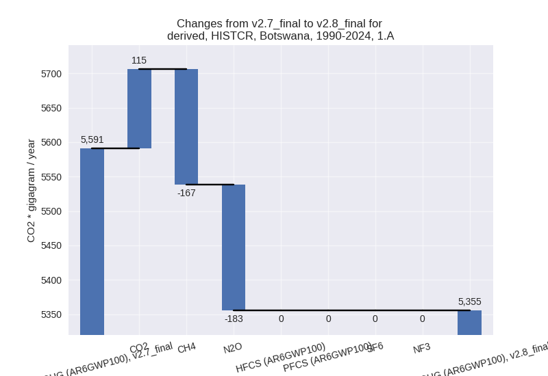
There is no subsector information available in PRIMAP-hist.
- 1.B.1: Total sectoral emissions in 2022 are 505.88
Gg CO2 / year which is 6.5% of category 1 emissions. 2024 Emissions have
changed by -24.5% (-138.72 Gg CO2 /
year). 1990-2024 Emissions have changed by -26.0% (-92.77 Gg CO2 / year). For 2024
the changes per gas
are:
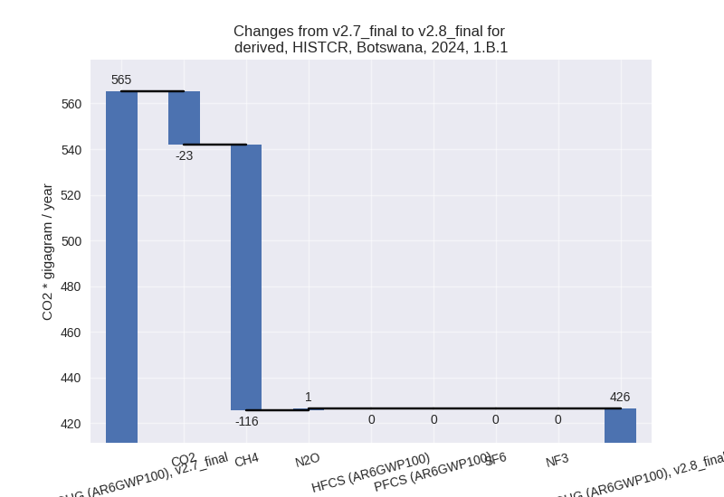
For 1990-2024 the changes per gas
are:
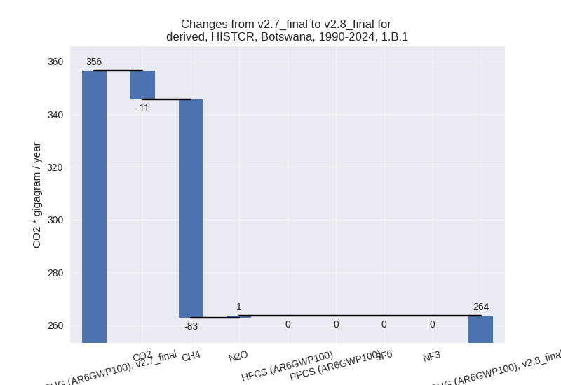
There is no subsector information available in PRIMAP-hist.
- 2: Total sectoral emissions in 2022 are 1711.05 Gg
CO2 / year which is 13.1% of M.0.EL emissions. 2024 Emissions have
changed by 249.8% (1388.65 Gg CO2 /
year). 1990-2024 Emissions have changed by 632.6% (1320.06 Gg CO2 / year). For 2024
the changes per gas
are:
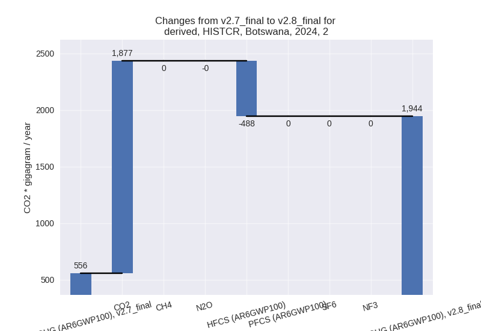
For 1990-2024 the changes per gas
are:
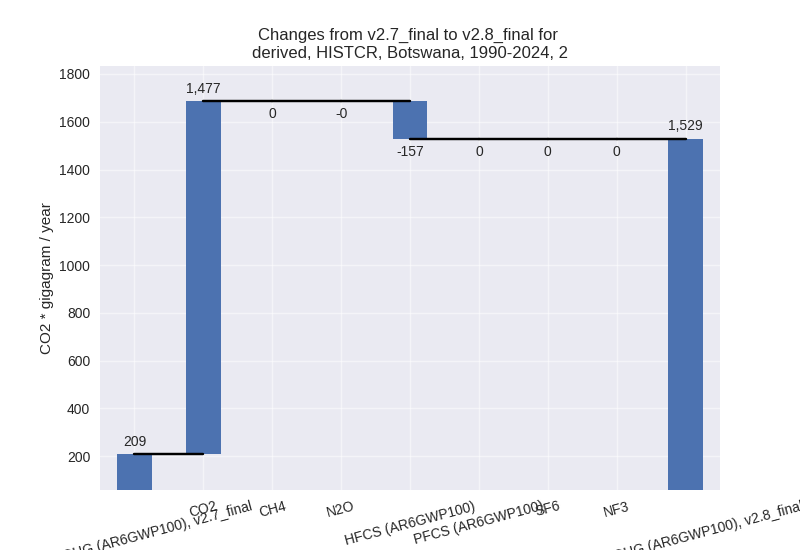
- M.AG: Total sectoral emissions in 2022 are 2471.85
Gg CO2 / year which is 19.0% of M.0.EL emissions. 2024 Emissions have
changed by -83.7% (-13257.44 Gg CO2
/ year). 1990-2024 Emissions have changed by -60.3% (-5856.95 Gg CO2 / year). For 2024
the changes per gas
are:
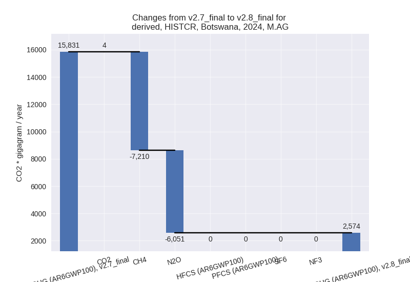
For 1990-2024 the changes per gas
are:
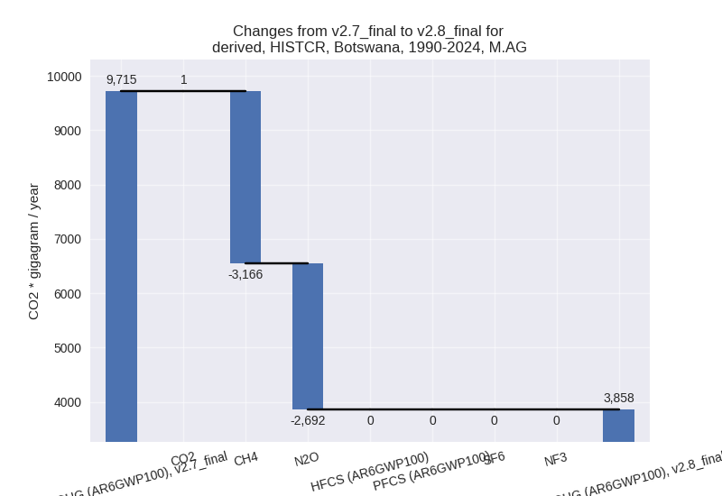
The changes come from the following subsectors:
- 3.A: Total sectoral emissions in 2022 are 1799.97
Gg CO2 / year which is 72.8% of category M.AG emissions. 2024 Emissions
have changed by 0.8% (13.88 Gg CO2 /
year). 1990-2024 Emissions have changed by 0.3% (8.03 Gg CO2 / year).
- M.AG.ELV: Total sectoral emissions in 2022 are
671.88 Gg CO2 / year which is 27.2% of category M.AG emissions. 2024
Emissions have changed by -93.6%
(-13271.32 Gg CO2 / year). 1990-2024 Emissions have changed by -79.3% (-5864.98 Gg CO2 / year). For 2024
the changes per gas
are:
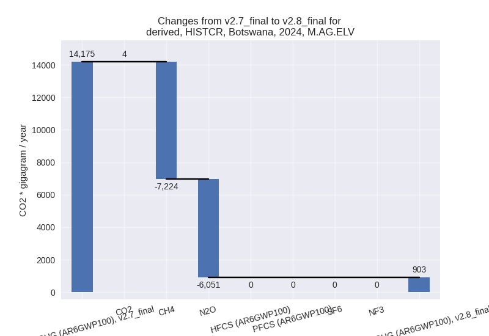
For 1990-2024 the changes per gas
are:
There is no subsector information available in PRIMAP-hist.
- 4: Total sectoral emissions in 2022 are 344.11 Gg
CO2 / year which is 2.6% of M.0.EL emissions. 2024 Emissions have
changed by 62.2% (138.64 Gg CO2 /
year). 1990-2024 Emissions have changed by 38.2% (72.34 Gg CO2 / year). For 2024 the
changes per gas
are:
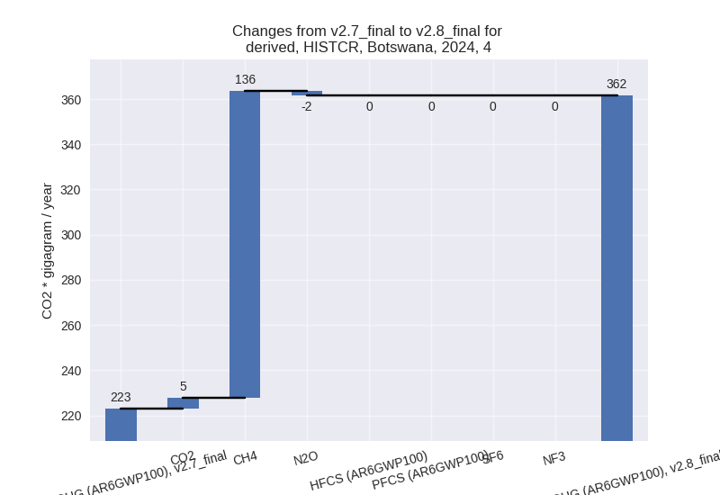
For 1990-2024 the changes per gas
are:
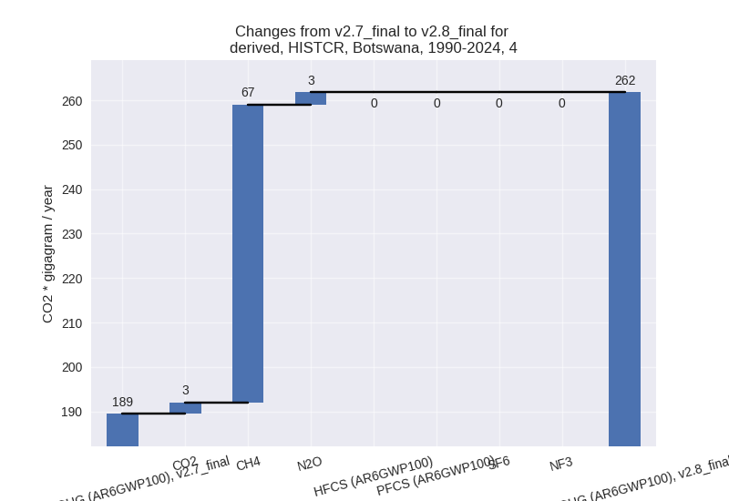
- 5: Total sectoral emissions in 2022 are 683.22 Gg
CO2 / year which is 5.2% of M.0.EL emissions. 2024 Emissions have
changed by -24.1% (-87.41 Gg CO2 /
year). 1990-2024 Emissions have changed by 104.9% (193.55 Gg CO2 / year). For 2024
the changes per gas
are:
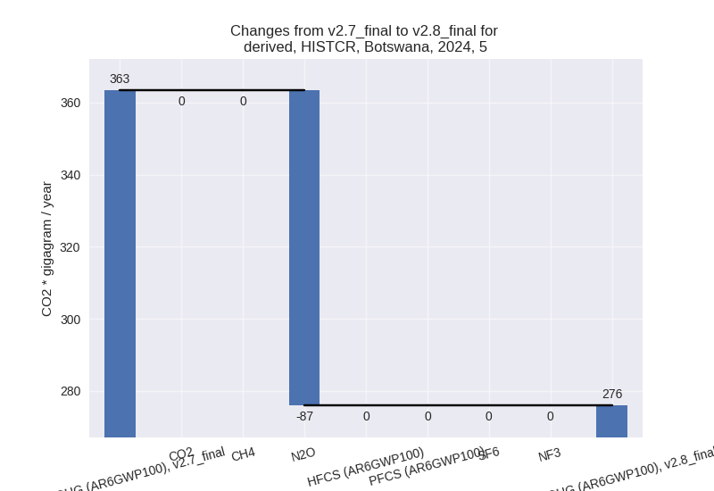
For 1990-2024 the changes per gas
are:
third party scenario (HISTTP):
Most important changes
per time frame
For 2024 the following sector-gas combinations have
the highest absolute impact on national total KyotoGHG (AR6GWP100)
emissions in 2024 (up to 20 with either at least 0.2%
impact on total emissions or at least 20% change):
- 1: M.AG.ELV, CH4 with -3120.02 Gg CO2 / year (-43.2%), -12.4%)
- 2: 1.A, CO2 with 2258.21 Gg CO2 / year (35.9%), 9.0%)
- 3: 2, CO2 with 961.42 Gg CO2 / year (4368.2%), 3.8%)
- 4: M.AG.ELV, N2O with -271.81 Gg CO2 / year (-3.9%), -1.1%)
- 5: 1.B.1, CH4 with -256.59 Gg CO2 / year (-20.4%), -1.0%)
- 6: 5, N2O with -87.41 Gg CO2 / year (-24.1%), -0.3%)
- 7: 1.A, CH4 with 81.02 Gg CO2 / year (46.1%), 0.3%)
- 8: 4, CH4 with 54.72 Gg CO2 / year (11.8%), 0.2%)
- 9: 3.A, CH4 with -51.99 Gg CO2 / year (-4.4%), -0.2%)
- 10: 1.B.1, CO2 with -7.29 Gg CO2 / year (-29.4%), -0.0%)
- 11: 4, CO2 with 4.85 Gg CO2 / year (inf%), 0.0%)
- 12: M.AG.ELV, CO2 with 3.58 Gg CO2 / year (inf%), 0.0%)
- 13: 1.B.1, N2O with 0.88 Gg CO2 / year (49.8%), 0.0%)
For 1990-2024 the following sector-gas combinations
have the highest absolute impact on national total KyotoGHG (AR6GWP100)
emissions in 1990-2024 (up to 20 with either at least
0.1% impact on total emissions or at least 10% change):
- 1: 2, CO2 with 493.67 Gg CO2 / year (1667.1%), 3.1%)
- 2: 1.A, CO2 with 236.89 Gg CO2 / year (5.2%), 1.5%)
- 3: 5, N2O with 193.55 Gg CO2 / year (104.9%), 1.2%)
- 4: 3.A, CH4 with -100.65 Gg CO2 / year (-4.6%), -0.6%)
- 5: M.AG.ELV, CH4 with -47.56 Gg CO2 / year (-1.4%), -0.3%)
- 6: 1.B.1, CH4 with 44.54 Gg CO2 / year (6.9%), 0.3%)
- 7: 1.A, CH4 with 25.87 Gg CO2 / year (13.8%), 0.2%)
- 8: 4, CO2 with 2.51 Gg CO2 / year (inf%), 0.0%)
- 9: M.AG.ELV, CO2 with 0.90 Gg CO2 / year (inf%), 0.0%)
- 10: 1.B.1, N2O with 0.83 Gg CO2 / year (58.8%), 0.0%)
Changes in the main sectors for aggregate KyotoGHG (AR6GWP100)
are
- 1: Total sectoral emissions in 2022 are 9461.35 Gg
CO2 / year which is 41.3% of M.0.EL emissions. 2024 Emissions have
changed by 24.7% (2052.85 Gg CO2 /
year). 1990-2024 Emissions have changed by 5.4% (306.06 Gg CO2 / year). For 2024 the
changes per gas
are:
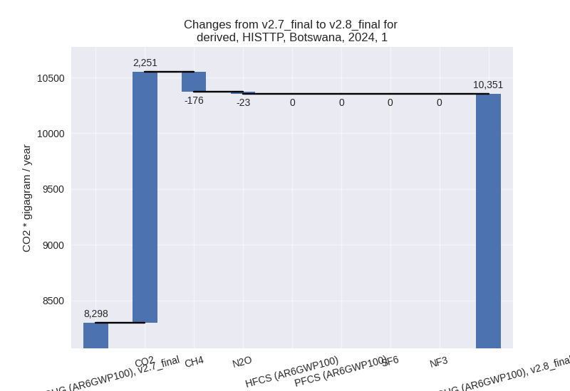
For 1990-2024 the changes per gas
are:
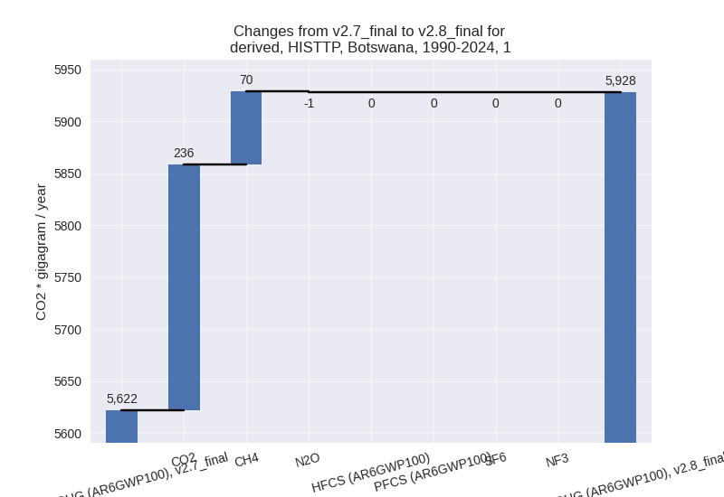
The changes come from the following subsectors:
- 1.A: Total sectoral emissions in 2022 are 8250.82
Gg CO2 / year which is 87.2% of category 1 emissions. 2024 Emissions
have changed by 33.0% (2315.85 Gg
CO2 / year). 1990-2024 Emissions have changed by 5.3% (261.10 Gg CO2 / year). For 2024 the
changes per gas
are:
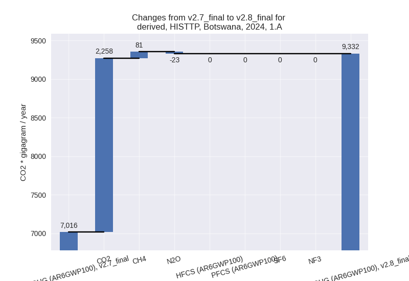
For 1990-2024 the changes per gas
are:
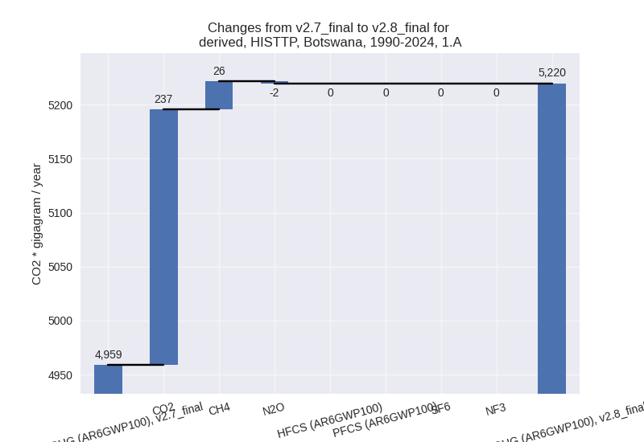
There is no subsector information available in PRIMAP-hist.
- 1.B.1: Total sectoral emissions in 2022 are 1210.53
Gg CO2 / year which is 12.8% of category 1 emissions. 2024 Emissions
have changed by -20.5% (-262.99 Gg
CO2 / year). 1990-2024 Emissions have changed by 6.8% (44.96 Gg CO2 / year). For 2024 the
changes per gas
are:
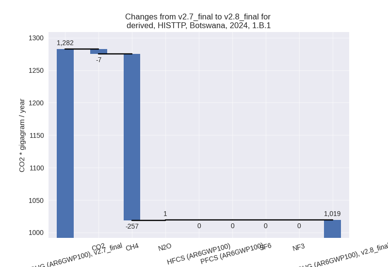
For 1990-2024 the changes per gas
are:
There is no subsector information available in PRIMAP-hist.
- 2: Total sectoral emissions in 2022 are 1268.06 Gg
CO2 / year which is 5.5% of M.0.EL emissions. 2024 Emissions have
changed by 172.9% (961.19 Gg CO2 /
year). 1990-2024 Emissions have changed by 236.6% (493.66 Gg CO2 / year). For 2024
the changes per gas
are:
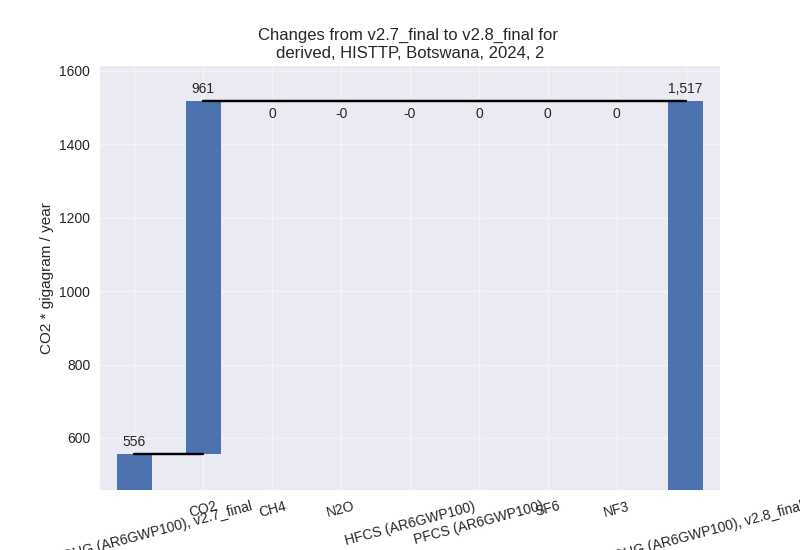
For 1990-2024 the changes per gas
are:
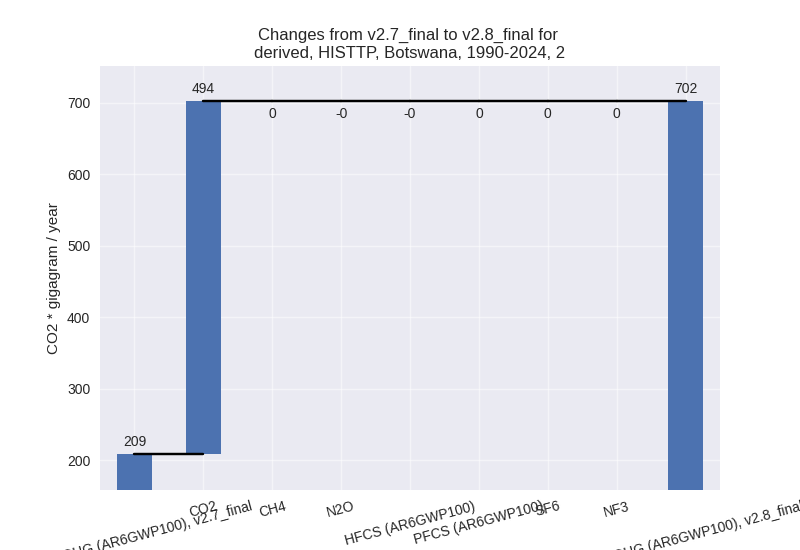
- M.AG: Total sectoral emissions in 2022 are 10954.54
Gg CO2 / year which is 47.8% of M.0.EL emissions. 2024 Emissions have
changed by -22.4% (-3439.88 Gg CO2 /
year). 1990-2024 Emissions have changed by -1.6% (-149.46 Gg CO2 / year). For 2024
the changes per gas
are:
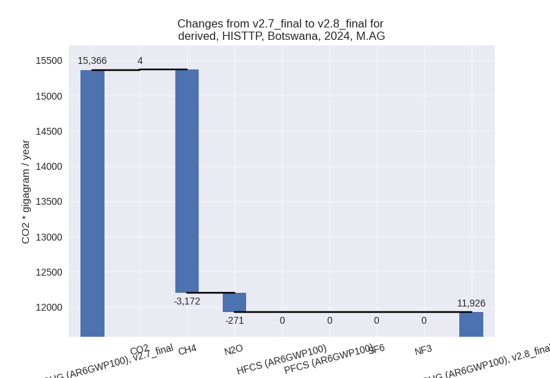
The changes come from the following subsectors:
- 3.A: Total sectoral emissions in 2022 are 1228.39
Gg CO2 / year which is 11.2% of category M.AG emissions. 2024 Emissions
have changed by -4.3% (-51.63 Gg CO2
/ year). 1990-2024 Emissions have changed by -4.6% (-101.59 Gg CO2 / year). For 2024
the changes per gas
are:
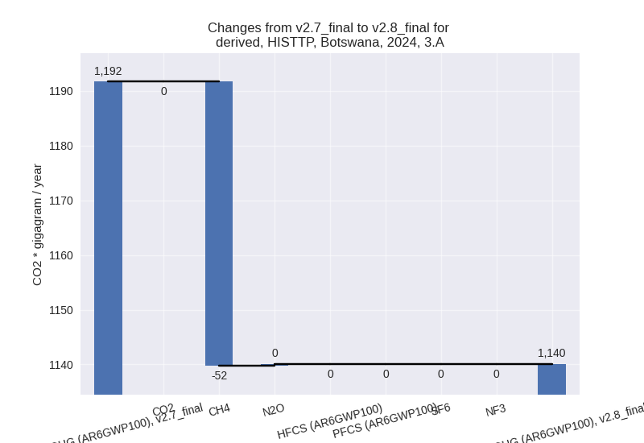
For 1990-2024 the changes per gas
are:
There is no subsector information available in PRIMAP-hist.
- M.AG.ELV: Total sectoral emissions in 2022 are
9726.15 Gg CO2 / year which is 88.8% of category M.AG emissions. 2024
Emissions have changed by -23.9%
(-3388.25 Gg CO2 / year). 1990-2024 Emissions have changed by -0.6% (-47.87 Gg CO2 / year). For 2024 the
changes per gas
are:
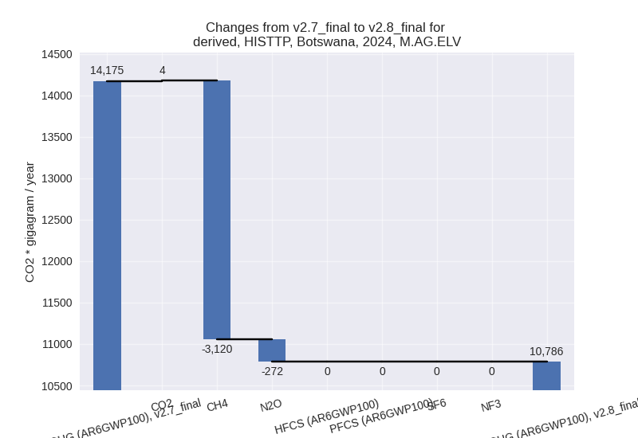
There is no subsector information available in PRIMAP-hist.
- 4: Total sectoral emissions in 2022 are 527.76 Gg
CO2 / year which is 2.3% of M.0.EL emissions. 2024 Emissions have
changed by 11.4% (56.91 Gg CO2 /
year). 1990-2024 Emissions have changed by 3.4% (10.48 Gg CO2 / year). For 2024 the
changes per gas
are:
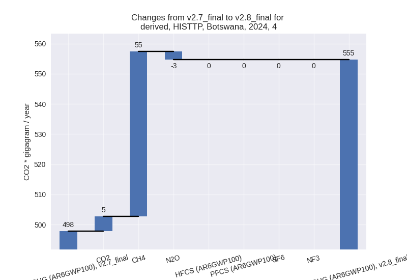
For 1990-2024 the changes per gas
are:
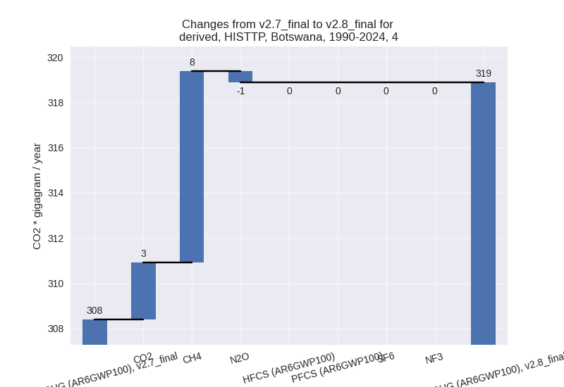
- 5: Total sectoral emissions in 2022 are 683.22 Gg
CO2 / year which is 3.0% of M.0.EL emissions. 2024 Emissions have
changed by -24.1% (-87.41 Gg CO2 /
year). 1990-2024 Emissions have changed by 104.9% (193.55 Gg CO2 / year). For 2024
the changes per gas
are:
For 1990-2024 the changes per gas
are:
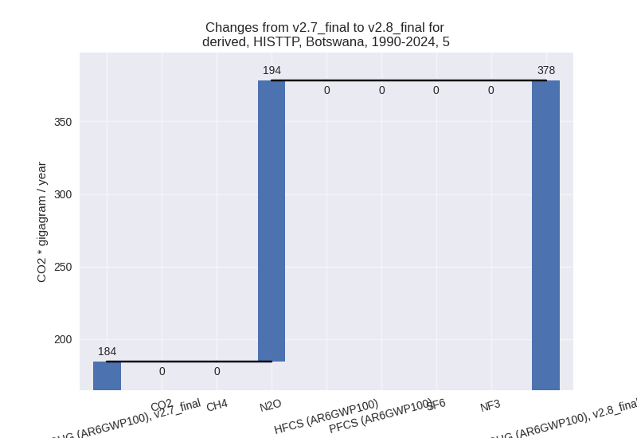